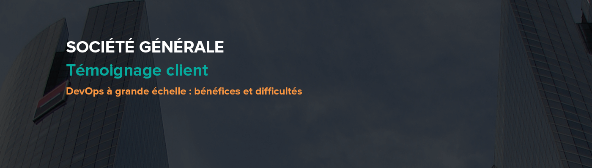
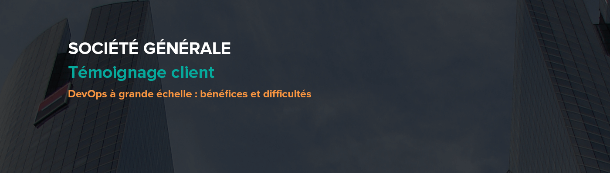

- Témoignage client
- Conférence
- Atelier
| AUDITORIUM | Berlin | Namur | Bruxelles | Amsterdam | ||
|---|---|---|---|---|---|---|
| 9h00 - 10h00 | Keynote d'ouverture - AXA : Transformation digitale, les enjeux d’un grand groupe (Y. Caseau) Vidéo Slides |
|||||
| 10h15 - 11h15 |
Voyages-sncf.com - Les apports de la Data Science à la connaissance client (M.L. Cassé) #Data Vidéo Slides |
Ingenico - Microservices et architecture réactive pour une nouvelle plateforme de services autour du paiement en magasin (J.F. Caenen & N. Jozwiak) #Backend #DevOps #Cloud Vidéo Slides |
À la découverte des mécanismes internes de Cassandra (M. Nantern) #Data Vidéo Slides |
Swift dans la vraie vie (S. Civetta & F. Mirault) #Mobile Vidéo Slides |
Brace yourselves, Angular 2 is coming! (A. Hebert & D. Podyachiy) #Frontend |
|
| 11h30 - 12h30 |
Thiga - Évaluez votre maturité produit (H. Geissmann) #Agile Vidéo Slides |
XebiaLabs XL Release - À la recherche du temps (perdu) entre le Use Case Metier et sa Mise en Service (B. Moussaud) #DevOps |
CQRS + Eventsourcing : en direct ! (S. Le Merdy & P.J. Vardanega) #Craft #Backend Vidéo |
Louis Vuitton - Digitalisation de l’utilisation du mobile dans le retail (J. Guillement) #Mobile #Cloud #Backend |
||
| 13h45 - 14h45 |
Be Data Driven : Monter son Data Lab (J. Buret & A. Benhenni) #Data |
Cellenza - Développez et déployez vos applications multiplateformes dans le Cloud (M. Perfetti) #Cloud |
Docapost - IoT, faciliter la vie connectée grâce à un Hub numérique (D. Weiss & M. Nantern) #IoT #Backend |
WeScale - Le Nouvel Ops (S. Le Mesle) #DevOps Vidéo Slides |
Kafka par la face Nord (X. Bucchiotty & M. Blanc) #Backend #Data |
|
| 15h00 - 16h00 |
SGCIB - DevOps à grande échelle : bénéfices et difficultés (F. Masson & C. Rochas) #DevOps |
Les algorithmes du Machine Learning (Y. Benoit & A. Phélip) #Data Vidéo Slides |
Comment Manager des geeks ? (L. Legardeur) #Management Vidéo Slides |
Les challenges des microservices (N. Jozwiak) #Backend Vidéo Slides |
||
| 16h25 - 17h25 |
Apache Mesos, ou comment exploiter les ressources de votre datacenter ? (J.P. Thiery & J. Doucet) #DevOps #Backend Vidéo Slides |
Orange Technocentre - Comment intégrer le marketing dans l’agilité, gérer des équipes agiles multisites (F. Derville, B. Rojat & B. Moitié) #Agile |
Du Javascript au metal, le web "natif" (P. Tandia) #Frontend |
WeScale - Dessine moi un nuage (A. Maury) #Cloud Vidéo Slides |
Double Loop TDD (D. Lemos & P.J. Vardanega) #Craft |
|
| 17h40 - 18h40 |
AXA Tech - Cloud Ops : Guide de survie d'une équipe Innovation chez un leader mondial de l’Assurance (E. De Morgoli) #Agile #Frontend #Cloud |
SGCIB/UX-Republic - La User eXperience au centre de l’entreprise (N. Bourgeois & A. Visonneau) #UX Vidéo Slides |
Scaling Culture : Agilité à l'échelle et Entreprise Libérée (N. Lochet) #Agile Vidéo Slides |
Akamis - Les nouvelles méthodes d’acquisition client (S. Coussement) #Marketing Vidéo Slides |
||
| AUDITORIUM | Berlin | Namur | Bruxelles | Amsterdam | ||
Téléchargez dès maintenant l'application officielle :


Cet événement est organisé par